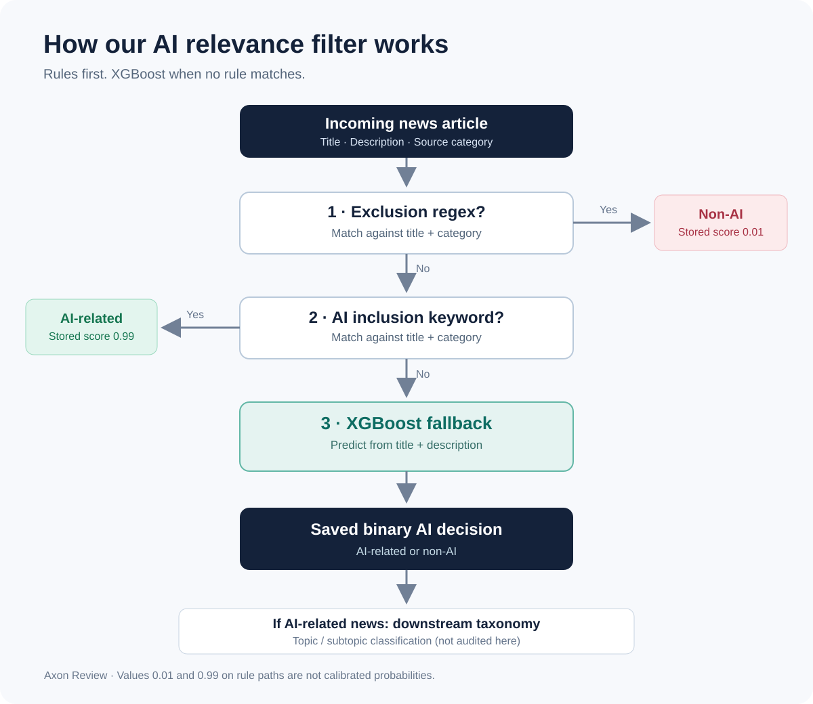
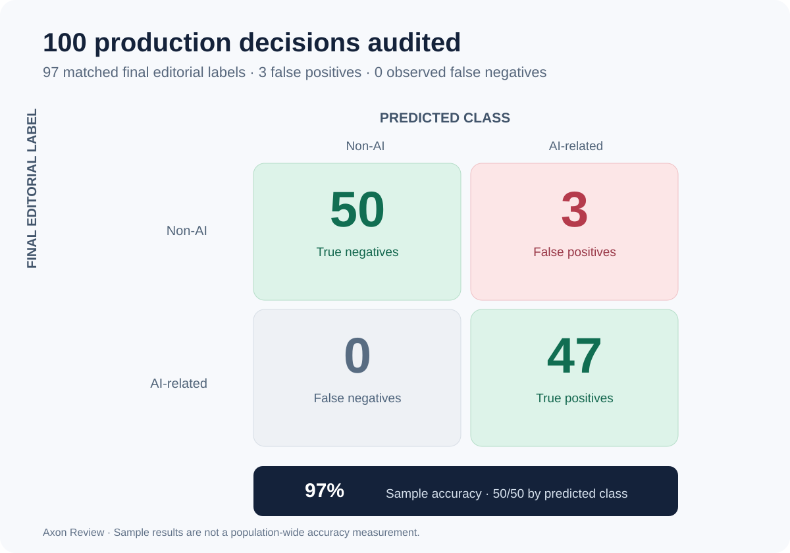

A story about an artificial coral reef made it through our AI news filter.
So did an article about an Atari VCS software-store closure. And a general market roundup whose references to AI weren't substantial enough to justify inclusion in our feed.
Those were the three mistakes we found when we reviewed 100 classifications from Axon Review's production news pipeline.
The other 97 matched our final editorial labels. That's encouraging. But the more useful result is what we learned by auditing the decisions rather than trusting a single accuracy number.
Our production relevance filter is a lightweight hybrid: exclusions first, inclusion keywords second, and an XGBoost model for cases that don't match either rule. We wanted to understand how that whole pipeline behaved on real incoming news—not just how the model scored on a separate test set.

Why AI-news relevance is harder than keyword matching
A new language-model release is easy to classify. So is an unrelated travel advisory. The interesting cases sit between those extremes.
An AI chip company's earnings might clearly matter. A legal dispute involving an AI company might belong in the feed even without discussing model architecture. A broad financial article might contain either one passing AI reference—or several independently substantial sections on AI investment.
There isn't a universal definition that settles every borderline case. For Axon Review, our editorial criterion is substantive relevance: developments in AI models, research, applications, infrastructure, companies, business strategy, policy, or social consequences. AI need not dominate the article. A stray company name, though, is not enough.
That distinction matters upstream. A false positive adds noise to the feed and may enter downstream topic classification or story grouping. A false negative may never reach those systems at all.
The classifier is rules-first, not model-first
The binary AI-relevance stage follows three ordered paths:
- Exclusion regex: If an exclusion matches the article's title or source category, label the article non-AI.
- Inclusion keywords: Otherwise, if an AI keyword matches the title or category, label the article AI-related.
- XGBoost fallback: Otherwise, classify the combined title and description using the trained binary model.
The exclusion rule takes precedence over the inclusion rule. Existing saved binary decisions are generally reused instead of repeatedly inferred. AI-related news may then pass through separate topic and subtopic classification; our audit does not evaluate those later stages.
The rule paths store 0.01 or 0.99 as binary scores. These are hardcoded values, not calibrated probabilities. Nor do we yet have reliable production counts separating decisions made by exclusions, inclusions, and XGBoost. We therefore cannot claim that a particular percentage of articles bypassed model inference.
The purpose of the architecture is pragmatic: cheap, explicit checks for recognizable cases; classical ML for everything else. But efficiency doesn't establish correctness. Rules can be brittle, and the model can misclassify. We need to evaluate their combined output.
Our first benchmark was not the production audit
We first ran a raw-model-only XGBoost benchmark on 100 historical examples, balanced by reference label: 50 AI-related, 50 non-AI. At a decision threshold of 0.5, the model classified 97 correctly: 47 true positives, 50 true negatives, three false negatives, and no false positives.
That was a useful development baseline, not conclusive evidence of production performance. The reference labels were AI-assisted and only partly human-reviewed, and the dataset was not a documented random sample of live traffic. We checked available historical datasets for training overlap, but those checks do not establish complete independence from every training source.
Most importantly, the raw-model benchmark skipped the production rule layer.
A production audit with 100 final editorial decisions
On October 31, 2026, we exported eligible news records classified during the preceding 14-day rolling window. There were 9,675 records: 2,816 predicted AI-related and 6,859 predicted non-AI. The query's 20,000-row cap did not truncate this snapshot.
We randomly selected 50 from each predicted class, without replacement, using seed 42. We chose this balanced allocation to examine both accepted and rejected articles, not because production traffic is evenly split.
An independent LLM provided provisional classifications without being shown the production predictions. We then reviewed the records against our editorial standard, paying particular attention to disagreements and ambiguous cases. Some decisions used only available title and description fields; a difficult market roundup was evaluated with fuller RSS text.
The final review was human-supervised, but not blinded. We could see the production and LLM predictions during adjudication, creating a real possibility of anchoring bias. The results describe agreement with our operational editorial policy, not an objectively infallible ground truth.
What we found

| Measure | Observed reviewed sample |
|---|---|
| Correct decisions | 97 / 100 |
| False positives | 3 |
| False negatives | 0 observed |
| AI precision | 94.0% |
| AI recall | 100.0% observed |
| AI F1 | 96.91% |
All three disagreements were production false positives: the generic market roundup, the Atari store-closure story, and the artificial coral-reef story.
Other cases required judgment but remained AI-related. For example, we included a report about a former OpenAI employee under our AI-company news policy. We also included a different, lengthy market roundup: although its headline concerned broader markets, its complete RSS text contained multiple substantial AI-industry sections. The difference between those two roundups is a useful reminder that relevance is not the same as keyword presence—or headline dominance.
We found zero false negatives in the 50 sampled predicted-negative records. That does not mean the pipeline never misses AI news; there were another 6,809 predicted-negative records we did not inspect.
Why our 97% sample figure and 98.25% estimate are both valid
Our sample was balanced by prediction, whereas only 29.1% of the eligible population had been predicted AI. So the raw 97/100 figure intentionally gives the predicted-positive and predicted-negative groups equal weight.
To estimate accuracy for the 9,675 eligible records, we instead weight each group's observed correctness by its population size:
Weighted accuracy = (2,816 / 9,675 × 47 / 50) + (6,859 / 9,675 × 50 / 50) ≈ 98.25%.
This is a sampling-weighted estimate, not an observed census result. It depends on the uniform random sampling within each predicted group, our final labels, and the defined snapshot. It says nothing directly about future traffic or other content types.
The small review set matters. Our internal report provides an approximate, clipped normal 95% interval of 96.32%–100% for weighted accuracy. That interval is illustrative, not a definitive coverage guarantee: one stratum had zero observed errors, and sampling uncertainty is only part of the uncertainty. Editorial disagreement, incomplete article context, and non-blinded adjudication are not captured by that interval.
Two separate evaluations. Two identical accuracy percentages. No head-to-head result.
It's tempting to say the raw XGBoost model and production pipeline both achieved 97%, so the rules made no difference. That would be a mistake.
The offline benchmark and production audit used different examples, different label provenance, and different sampling designs. The first evaluated only the XGBoost model; the second evaluated final stored decisions with rule overrides. The first observed three false negatives; the second observed three false positives. We cannot attribute that difference to the rules.
To isolate the effect of the rule layer, we need a paired experiment: run the same version of raw XGBoost on these same 100 adjudicated production articles, then compare both sets of predictions to the same final labels. We have not presented that experiment as completed.
What we would improve next
The audit generated a repeatable process—defined cohort, random sampling, provisional independent review, written editorial policy, final adjudication, stored labels, and reproducible scoring. That is more useful than an isolated percentage.
Next steps are deliberately limited:
- Increase the sample size and repeat the audit on fresh time windows.
- Blind at least part of the adjudication, and use multiple reviewers for the hardest cases.
- Record decision provenance—exclusion, inclusion keyword, or XGBoost—to measure where errors actually originate.
- Run the paired model-versus-production comparison before making claims about whether rules improve accuracy.
- Make the export window explicit with saved UTC start and end timestamps instead of relying only on a rolling
now()query.
The broader repository test suite also has pre-existing collection and environment issues; our 14 targeted evaluation tests passed, but we do not represent that as a clean full-suite regression run.
The result that matters
On a review of 100 saved production decisions, 97 matched our human-supervised editorial labels. A correctly weighted estimator suggests high accuracy for the eligible 14-day snapshot, with meaningful uncertainty.
That's encouraging—not a declaration that the problem is solved.
For an AI news intelligence platform, engineering quality means knowing not only how to get a prediction, but also how much confidence the evidence deserves. This audit gave us a better answer to the second question, and a clearer plan for improving the first.
Scope and reproducibility: This evaluation covers binary AI relevance for news articles, not story clustering, topic classification, or entity extraction. Evaluation scripts and documentation were added to the Axon Review backend repository in commit 15563dd (feat(ml): add reproducible classifier evaluation framework). Production article-level data and review records are retained locally, not included in the code commit. The source snapshot was generated October 31, 2026; editorial review was completed November 1.